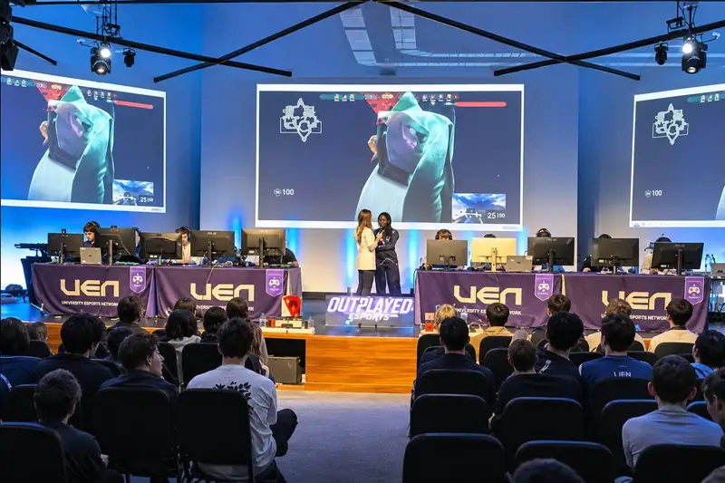
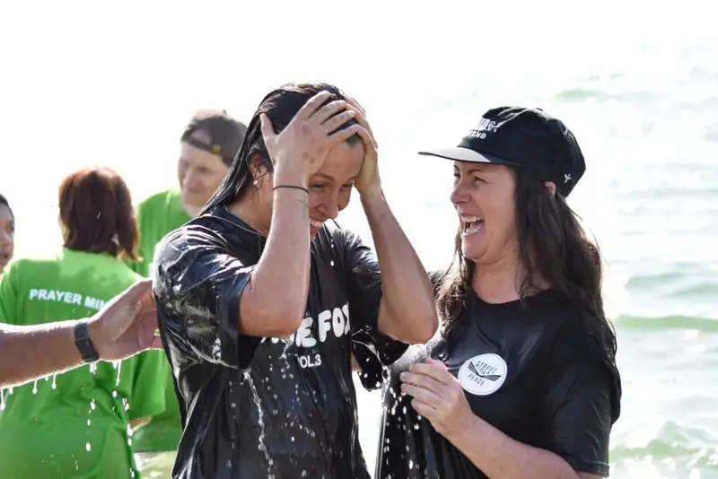
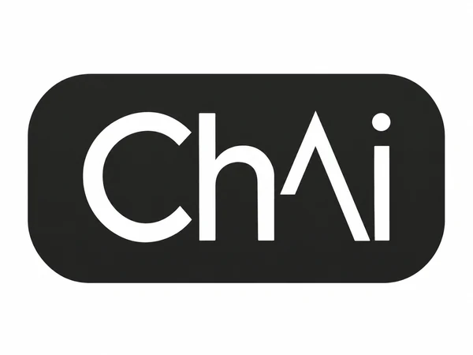
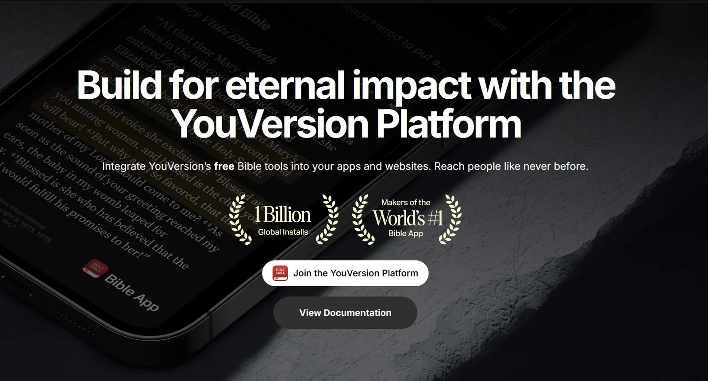
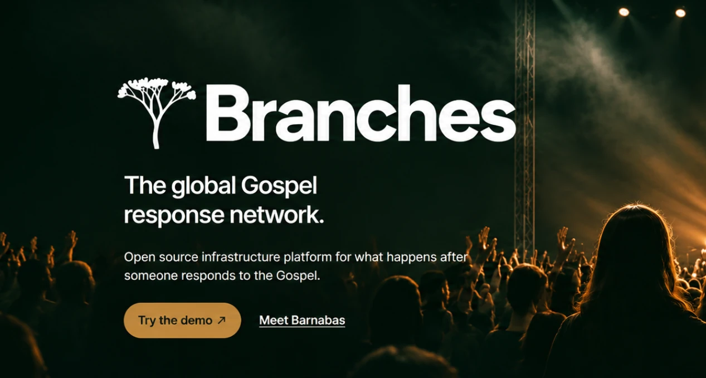

On the street
A QR card or link on an evangelist’s phone. Someone scans, and their details are saved safely in seconds.
Shared tools that help churches and ministries across Australia work as one body, so no one who says yes to Jesus walks alone.
Stories
“Behold, I am doing a new thing; now it springs forth” Isaiah 43:19


UEN
A Christian gaming ministry that helped found Always Platform and tried it at youth events.
Sydney Fire Evangelism
Street evangelists using their own branded response app, live in a ministry setting.
Read the story
The Global Harvest
Their disciple-making training now sits in the Always App, with a simple way to ask about baptism.
NeedGod.net
Free training from the street and the live stream, one tap away, with a church near home for whoever says yes.

Christians in AI (CHAI)
Nathan Gaw on Branches, which evolved into Always Connect.
Read the story
YouVersion
Always Platform draws Scripture from YouVersion Platform, so people can read God’s Word where they said yes.
Read the storyFaithTech Australia
Always Platform is freely available to FaithTech Australia and wider builders and founders, as an integration.
Read the story
 Alpha
Alpha
An Alpha integration: people who choose "Explore faith" can find a course near them straight away.
Read the story
CXMMXNS
A worship tour of cities across Australia, with a next step for everyone who responds.

Rejoice
Rejoice uses Always Safety and Always Reports for spiritual impact across its consumer app portfolio.
Why we exist
Every week across Australia, people respond to Jesus at concerts, camps, services, on the street and online. Too many never find their way into a church family.
Churches and ministries are already doing the work. We serve them quietly, behind the scenes, with shared tools, so every yes has a next step and every team has more time for ministry.
We're new, and grateful to be serving alongside churches and ministries already using these tools.
“Not to us, O Lord, not to us, but to your name give glory” Psalm 115:1
How we help: Always Platform
Practical tools for churches and ministries, built once and shared freely. Your team signs in once and switches on what it needs.
What it looks like
A young person says yes to Jesus at a youth event and scans the code on the screen. With their consent, and a parent’s where needed, they’re introduced to one partner church near home, and a youth leader there gets in touch that week. The ministry sees totals for its board, never names, and stays on top of its child safety rules.
Agents help with follow-up and admin, and a person decides every step. How agents, consent and privacy work
Always App. A Bible, guides and training to share Jesus and walk with people.
Explore Always AppAlways Respond. A branded way to respond, by QR, tap, ticket or link, from the street to the altar call to online.
Explore Always RespondAlways Connect. Find a local church, hand people on safely, and follow up together.
Explore Always ConnectAlways Safety. Safe ministry, privacy and charity rules, made clear, with a quarterly check-up.
Explore Always SafetyAlways Reports. A monthly report for your board and funders, written for you, with totals only.
Explore Always ReportsWho it's for
Churches, youth ministries, evangelists, events, networks and the Christian tech platforms that serve them.
Welcome people near you who have said yes to Jesus, with less admin for your volunteers.
Modules to switch on
Keep young people safe, stay compliant, and give every young person a safe next step.
Modules to switch on
UEN A Christian gaming ministry that tried Always Platform at youth events.
See how we helpEvents, tours, evangelists and street teams: a next step near home for everyone who responds, and the fruit to show for it.
Modules to switch on
Sydney Fire Evangelism Street evangelists using their own branded response app.
See how we helpDenominations, networks and the tech platforms that serve them: every church ready to welcome, with totals only.
Modules to switch on
Love is Our Weapon Our first Always Safety user, ready to roll it out to youth ministries and churches.
See how we helpWhether you're a church, Christian ministry or supporter, we invite you to join us. Together, we can strengthen the work of the Gospel across Australia.
An independent, member-based Christian nonprofit. Free for churches; larger ministries contribute according to their size. How we work
“The harvest is plentiful, but the laborers are few” Matthew 9:37
We bring churches and Christian ministries across Australia together, with shared tools and a shared heart, so more of their time, money and love can go to the Gospel.
Why we exist
Every yes to Jesus deserves a church family.
Every week across Australia, people meet Jesus at camps, concerts, services, on the street and online, and churches and ministries are already doing beautiful work to reach them. Jesus sent His Church to “go therefore and make disciples of all nations” (Matthew 28:19, ESV), and He never meant any of us to carry that alone.
Yet ministries often build the same tools twice, carry heavy administration, and find it hard to pass people on to one another with care. We carry that practical work together, so every team can give more of itself to people.
We’re new, and grateful to be starting alongside the churches and ministries already using these tools.
How we help
Free for churches. Open source. Kept in Australia.
See Always PlatformOur name
“I am with you always.”
From Jesus’ promise in the Great Commission (Matthew 28:20, ESV).
Our posture
Like the seven appointed in Acts 6 to serve tables, so the apostles could give themselves to prayer and the word, we serve gladly in the background, so churches and ministries can give themselves to the Gospel.
Our vision
One faith. Many ministries. A shared mission: the Gospel going further across Australia, and more people worshipping Jesus.
Christ at the centre and the Gospel first. Built together and shared freely, with people’s details always their own.
Always Foundation is a Gospel technology foundation: an independent, member-based Christian nonprofit. Our members help shape what we build, contribute to common standards and share in the benefits. Churches use it free, and larger ministries contribute according to their size.
Members affirm the Nicene Creed (AD 381), so churches across denominations can serve together on the historic faith. The foundation is being established as an Australian not-for-profit company limited by guarantee, to register as a charity with the ACNC.
How Always Platform and its five modules work, for churches, ministries, people and developers.
Solutions
Welcome people near you who have said yes to Jesus, and help them grow as disciples. Free, always.

Register your church and tell us who you are. It takes a few minutes.
We check with your denomination or network, and your connect lead does a 20-minute course. Then you're a partner church.
When someone nearby asks for a next step you offer, accept or pass. Then call or text from your own phone.
A free web app for your team. Nothing to install, so your connect lead can say yes from their phone on a Sunday.
Always Connect · Inbox
Your welcome, service times, what to expect, and the next steps you offer, in your colours.
People who have already said yes to Jesus, within the area you choose.
Choose what you offer and how many people you can welcome each month. Pause any time.
Invite your pastor, connect lead and youth leaders, each with the right access.
Keep track of everyone you are welcoming, and get a simple monthly report for your leaders.
Use the free inbox, or connect your church management system through the API.
Solutions
Events, tours, camps, evangelists and street teams: free tools to share the Gospel, less administration, and a next step near home for everyone who responds.

Choose the next steps you offer and add your brand. Ready in minutes.
Show the QR code on the big screen, hand out cards, or use the response card in your own app.
Watch results live, and get a monthly report ready for your funders and board.
People respond on a page that looks like you. Your team sees totals live, and each person's details go only to the church that welcomes them.
Example figures. Totals only.
YOUR MINISTRY
Said yes tonight? Take your next step.
Answer to donors, a foundation or a denomination? Always Platform writes your report each month. Nothing extra to enter.
Example figures. Totals only.
Shared tools for the everyday work behind every ministry, with agents to help with follow-up and admin, so your team can spend more time on people.
Shared policies, templates and member records for boards and leaders.
Consent records and privacy requests, ready to export when you need them.
Child safety checklists and Working With Children Check reminders, kept in one place.
A monthly report for your board and funders, with totals only.
Sharing a testimony, sermon or post? Add a response link or QR code. Anyone in Australia can say yes and meet a church near them.
We'd love to hear about it, and help everyone who responds find a next step near home.
Share Jesus with confidence, save every contact safely, and connect people with a local church, like Sydney Fire Evangelism.
The Good News, Scripture and short training in the Always App.
Your own branded response app, with contacts kept safe in Australia.
With their consent, pass people to a church near them, or to Alpha if they want to explore faith.
A module of Always Platform
A Bible, guides and training to share Jesus and walk with people.
A Bible, conversation guides, training and follow-up in one free app, so every yes can grow into a disciple.
Open the Always AppAlways App · in your browser
Who will you walk with today?
“For the Son of Man came to seek and to save the lost.”
Luke 19:10 (ESV)Pray for Sam, Priya and Josh

A free web app with everything you need to share Jesus. Nothing to download: open app.alwaysfoundation.org on your phone and add it to your home screen.
John 3 · ESV
316 For God so loved the world, that he gave his only Son…
The Always path
Someone said yes to Jesus. Give them a next step.
Walking with Sam
Near you
Built on Always Platform. Connect uses the church feed and events. Gather uses Always Respond and Always Connect. The Bible has KJV and WEB built in, with more translations through the YouVersion Platform.
KJV and WEB built in, more through YouVersion. Highlight, share verses as images, listen with soft music and a sleep timer.
How to share with someone with no faith, a Muslim friend, a Jehovah's Witness, a Buddhist and more.
Start a response point in seconds, coach the moment, and connect people with their yes.
Pray for people by name and keep short notes after a conversation. They stay in your browser, on your own device.
Connect leads accept introductions in Always Connect, on the web.
Your prayer list, notes and plans stay on your own device. No ads.
Short, free courses you can do in any browser, made with evangelists and churches.
Tell how Jesus changed your life, in three minutes, in your own words.
What to say, how to pray, and what to do next when someone says yes.
For church connect leads: the first call, the first coffee, the first Sunday.
Child safe practice for youth leaders and events.
Listening well and sharing gently with friends of other beliefs.
The first months of following Jesus: Bible, prayer, church and friends.
Running a street team, an outreach or a tour? Get your own branded response app on Always Platform, like Sydney Fire Evangelism's, and use the same open tools we use, free.
People say yes on a page with your name on it, and get a next step near home.
Add our church finder to your website or app in one line.
Like Sydney Fire Evangelism: your logo, your next steps, and contacts saved safely in Australia.
Reminders and message drafts after outreach. A person approves every step.
Monthly reports written for you, with totals only.
Every tool is open, so you can check it, improve it or run it yourself.
Short answers to the questions we hear most.
A Gospel technology foundation: an independent, member-based Christian nonprofit that brings churches and Christian ministries across Australia together for the Gospel. We serve quietly in the background, building practical tools once and sharing them freely, so ministries spend less time on administration and more time making disciples.
Neither, directly. We are a ministry that serves ministries. In Acts 6 the early church appointed people to carry the practical work so the apostles could devote themselves to prayer and the word, and the Gospel spread. We play that role for the wider Church: we exist to equip the saints for the work of ministry (Ephesians 4:12). We are not on the frontline. We stand behind it.
Three things. We equip, with the Always App and Always Respond, your own branded way for people to respond. We support, with Always Safety and Always Reports, so the administration is lighter. And we connect, with Always Connect, so everyone who says yes to Jesus can be welcomed by a local church.
Churches and Christian ministries that affirm the Nicene Creed. Members help shape what we build and share in the benefits. Supporters can join us too, through prayer and giving.
One open-source platform with one sign-in and shared data. Members switch on the modules they need: Always App, Always Respond, Always Safety, Always Reports and Always Connect. Like YouVersion, there are tools people use every day and an open platform underneath that others can build on.
Every ministry is different. Start with the one you need, perhaps Always Safety, and add others as you grow. Because every module runs on the same platform, your team signs in once and your information works together, with nothing to move later.
The Always Foundation, a members-based not-for-profit being established in Australia. Churches and ministries that affirm the Nicene Creed are its members.
No. Evangelical and Pentecostal churches and ministries across denominations and networks take part, on the common ground of the Nicene Creed.
Our focus is Australia. The technology is open source, so churches and ministries in other countries are welcome to use it.
Not for the Always App: open it and start, and your prayer list and notes stay on your phone. Church and ministry teams sign in with an email link for tools like Always Safety.
No. Churches never pay. Larger ministries contribute according to their size.
Register at Join Always and get ready at your own pace. We check with your denomination or network, and then you're a partner church.
Pass, with a reason. The next church or ministry nearby is asked. If none can, our care team helps.
No. Use the free Always Connect inbox, in any browser, or connect your system through the API. Elvanto and Planning Center come first.
You're a partner church, trained, have room this month and usually reply on time. If you get busy, introductions simply pause.
Only the people you add to your team, and only after your church accepts an introduction.
Yes. Always Respond pages, QR codes, NFC taps and texts can use your colours, logo and wording.
Hand-offs into Elvanto and Planning Center are being built first, then Fluro, ChurchSuite and Breeze. See Integrations at alwaysfoundation.org/#/integrations.
Totals for each event: responded, introduced, accepted and connected. Each person's details go only to the church that welcomes them.
Yes. It writes a monthly report for you: who responded, who was introduced, who was contacted, and who is now part of a church family. Download it as a PDF or spreadsheet, or send your funder a link.
No. Reports show totals only, and small numbers are hidden so no one can be identified.
Yes. Your Safety tab keeps your consent records, privacy requests, child safety checklists and Working With Children Check reminders, ready to export.
Yes. Add your title, your funder's name and a short introduction. If a funder needs something specific, talk to us.
Yes, for the steps you offer, like a youth night or a course.
Yes. Add a response link or QR to a video description or post, or embed the response card on your website. An invisible check stops spam without puzzles.
With Always App, a free web app: they start a response point, show their own QR, or connect someone in a conversation with their yes.
You choose a next step, see who will be in touch, and a church or ministry near you reaches out.
Your first name, a mobile number and your suburb.
No. You respond on a simple web page. Later, you're welcome to try Always App in your browser to read the Bible and grow.
Yes, any time, from the link in your text. Your details are then deleted.
Yes. If you're under 15, a parent or guardian says yes with you. From 15 you can decide for yourself. Young people are introduced only to youth partners, and no AI ever touches your information.
Every Christian who wants to share Jesus and walk with people, and church teams who welcome them.
It's a web app, so there's nothing to download. Open app.alwaysfoundation.org on any phone.
Not for now. The Always App and our tools for churches and ministries run in the browser on your phone, tablet or computer, and you can add it to your home screen.
The King James Version and the World English Bible, with more through YouVersion.
In your browser, on your own device. They aren't sent to us.
In Australia, encrypted, under Australian privacy law.
No.
To save time on routine work, like writing your monthly report. Every welcome comes from a real person, and young people's information is kept out of AI entirely.
A guide to the privacy, child safety, charity and messaging rules that apply to your ministry, with a check-up every quarter that a person at your ministry approves, and updates when the law changes. It is free for churches and is not legal advice. Try the free check-up at alwaysfoundation.org/#/compliance.
They help your team with follow-up and administration: drafting messages, setting reminders and keeping records up to date. A person approves every step, people's details stay in Australia, and agents never handle young people's information.
Email safeguarding@alwaysfoundation.org for safeguarding, privacy@ for privacy and security@ for security.
By supporters, and by larger ministries contributing according to their size. Churches never pay.
Pray with us, and get in touch at hello@alwaysfoundation.org to book a catch-up call.
Yes. The API, SDK and open standard are open source under Apache 2.0, with docs under CC BY 4.0. An MCP server for AI assistants is coming, and it never sees a person's details.
We'd love to hear from you, and to book a catch-up call. Get in touch or email hello@alwaysfoundation.org.
Help us make Always Platform better. Share an idea, report something that isn't working, or tell us about a church we've missed.
Always Platform
One open-source platform with shared data and one sign-in. Your team switches on the modules your ministry needs, and developers can build on the same foundation.
Always App A Bible, guides and training to share Jesus and walk with people. Explore
Always Respond A branded way to respond, by QR, tap, ticket or link, from the street to the altar call to online. Explore
Always Safety Safe ministry, privacy and charity rules, made clear, with a quarterly check-up. Explore
Always Reports A monthly report for your board and funders, written for you, with totals only. Explore
Always Connect Find a local church, hand people on safely, and follow up together. Explore
Every module runs on the same foundation, so your team signs in once and your information works together. Start with one module and add more as you grow.
Always Respond + Always Connect
Always Respond captures the moment someone says yes to Jesus. Always Connect makes sure it leads somewhere: the next best faith step for that person, near where they live, with a real person to walk with them.
By QR code, tap, ticket or link. They choose what would help, and agree to be connected.
A partner church nearby, or the ministry that fits best: Alpha to explore faith, a youth group, or someone to talk to.
A real person reaches out. They count as connected only when they tell us so themselves.
Often that step is a local church. Sometimes it’s another ministry first. Either way, consent travels with them, and no one is left without a next step.
Equip, support and connect ministries, with agents to help with follow-up and admin wherever they're needed.
A Bible, guides and training to share Jesus and walk with people.
A branded way to respond, by QR, tap, ticket or link, from the street to the altar call to online.
Safe ministry, privacy and charity rules, made clear, with a quarterly check-up.
A monthly report for your board and funders, written for you, with totals only.
Find a local church, hand people on safely, and follow up together.
The API, SDK, MCP connector, feeds and webhooks behind every Always module.
Welcome people near you who have said yes to Jesus, with less admin for your volunteers.
Modules to switch on
Keep young people safe, stay compliant, and give every young person a safe next step.
Modules to switch on
UEN A Christian gaming ministry that tried Always Platform at youth events.
See how we helpEvents, tours, evangelists and street teams: a next step near home for everyone who responds, and the fruit to show for it.
Modules to switch on
Sydney Fire Evangelism Street evangelists using their own branded response app.
See how we helpDenominations, networks and the tech platforms that serve them: every church ready to welcome, with totals only.
Modules to switch on
Love is Our Weapon Our first Always Safety user, ready to roll it out to youth ministries and churches.
See how we helpDevelopers
The same open-source API, SDK and AI connector every Always module runs on. Help people who say yes to Jesus find a local church, from your own website, app or event.
Keys are free for churches and ministries.
GET/v1/directory?q=parramatta&kind=church
{ "items": [ { "slug": "example-church-parramatta", "name": "Example Church", "suburb": "Parramatta", "partner": true, "steps": ["visit", "talk", "course"] } ], "next": null}POST/v1/responses
{ "ageBand": "18_plus", "step": "talk", "suburb": "Harris Park", "consent": { "purposes": ["connect"], "allowNextNearby": true, "party": "self" }} 201 Created{ "id": "rsp_7Hq2", "status": "offered" }SDKcanShare(consent, 'connect')
// A 14-year-old, without a parent's okay{ "ok": false, "reason": "parent_confirmation_required"} // Nothing moves until it passes.MCPfind_churches
// "Which partner churches near Penrith// run a course for new Christians?"{ "tool": "find_churches", "input": { "near": "Penrith", "step": "course" }} // Public information only. No people.Example data. Names are invented.
Four calls take someone from a moment of decision to a real person at a church near home.
POST /v1/responsesAge band first, then the step they chose and what they agreed to share.
handoff.offeredThe nearest partner church that fits. Webhooks carry ids, never names.
POST /v1/handoffs/:id/acceptTheir details open to that church only, and the clock for first contact starts.
POST /v1/handoffs/:id/contactedFirst contact is logged. If it never comes, the person moves on to the next church.
Care for people is written into the platform, so every integration inherits it. These rules aren’t settings.
Send, show, export or sync: each one asks first, and a missing or withdrawn consent stops it.
Under 13s: no details at all. Under 15s: a parent or guardian confirms. Young people go only to youth partners, and never to AI.
No names or numbers in logs, webhooks, emails, texts or analytics.
Stored and processed in Sydney. No dependency that sends people’s details offshore.
// Someone withdrew yesterdayawait always.handoffs.share(id) ✕ refused: withdrawn// The church never sees them again,// and the person hears it’s done.Send responses, receive introductions, manage a church page and read the church feed. Scoped tokens, shown once, revocable.
API referenceA TypeScript client, a drop-in response card, the safety check-up and guardrails that fail closed.
SDK guideLet AI assistants find churches, see which are partner churches and list events, using public information only.
Connect an assistantTell us what you’re making. We’ll help you get started and keep it safe for the people it serves.
Always Foundation
Open your phone camera and point it here.
alwaysfoundation.org
Or fill it in on this phoneContact
Whether you're a church, a ministry, a supporter or a developer, we'd love to hear from you. Leave your details and we'll get back to you.
Join Always
Register in a few minutes. We'll verify your details and switch on what you need. Free for churches.
A module of Always Platform
A branded way to respond, by QR, tap, ticket or link, from the street to the altar call to online.
Wherever someone says yes to Jesus, give them a simple page that looks like you. One scan or tap, from a QR code, an NFC armband or a ticket, takes them from a moment online, on the street or in the room to a real next step.
Every yes deserves a next step, in your name.
One page, many ways in. Every scan, tap or click leads to the same simple next step, in your name.
A QR card or link on an evangelist’s phone. Someone scans, and their details are saved safely in seconds.
A code on the big screen, so everyone who responds can say so, then and there.
Armbands, tap discs and cards with an NFC chip open your page with a tap. No app needed.
A code or chip on a concert ticket, event pass or lanyard, so the response travels home with them.
A page for your event, campaign or video, with one clear way to respond.
A link for comments and posts, or a response card inside your own website or app.
Always Respond + Always Connect
Always Respond captures the moment someone says yes to Jesus. Always Connect makes sure it leads somewhere: the next best faith step for that person, near where they live, with a real person to walk with them.
By QR code, tap, ticket or link. They choose what would help, and agree to be connected.
A partner church nearby, or the ministry that fits best: Alpha to explore faith, a youth group, or someone to talk to.
A real person reaches out. They count as connected only when they tell us so themselves.
Often that step is a local church. Sometimes it’s another ministry first. Either way, consent travels with them, and no one is left without a next step.
Every page carries your logo, colours and words, on your own link. People meet your ministry, not ours. We stay in the background.
Every Always module runs on Always Platform, with one sign-in for your team.
Free for churches. One sign-in for your whole team, and your people’s details kept in Australia.
A module of Always Platform
A monthly report for your board and funders, written for you, with totals only.
Answer to donors, a foundation or a denomination? Always Reports writes your report each month from what already happened in Always Respond and Always Connect. Nothing extra to enter.
Show the fruit, without showing the people.
A clear monthly report, ready for your board and funders.
No names. Small numbers are hidden so no one can be identified.
Use your funder's titles and the outcomes they care about.
PDF, spreadsheet, or a link you can switch off.
One report, or one for each event, tour or campus.
Denominations and networks can see combined totals across their churches.
Every Always module runs on Always Platform, with one sign-in for your team.
Free for churches. One sign-in for your whole team, and your people’s details kept in Australia.
A module of Always Platform
Find a local church, hand people on safely, and follow up together.
When someone says yes to Jesus, Always Connect helps them find a next step near home, with a real person reaching out, and your team follows up together.
So no one walks alone.
3,937 churches and ministries mapped across Australia, each able to join and manage its own page.
We check with each church's denomination or network before anyone is introduced.
The person chooses their next step and sees who will reach out before anything is shared.
Accept or pass introductions from any phone, and keep walking with people.
People exploring faith can choose Alpha. Others may need a youth group or a care team.
If no one nearby can help, the Always care team reaches out.
Always Respond + Always Connect
Always Respond captures the moment someone says yes to Jesus. Always Connect makes sure it leads somewhere: the next best faith step for that person, near where they live, with a real person to walk with them.
By QR code, tap, ticket or link. They choose what would help, and agree to be connected.
A partner church nearby, or the ministry that fits best: Alpha to explore faith, a youth group, or someone to talk to.
A real person reaches out. They count as connected only when they tell us so themselves.
Often that step is a local church. Sometimes it’s another ministry first. Either way, consent travels with them, and no one is left without a next step.
Agents draft welcome messages, reminders and records for your team. A person approves every step, and young people's details never go near AI.
In pilot with the foundation teamEvery introduction and welcome flows into a monthly report for your board and funders, with totals only.
Explore Always ReportsEvery Always module runs on Always Platform, with one sign-in for your team.
Free for churches. One sign-in for your whole team, and your people’s details kept in Australia.
Solutions
Keep young people safe, stay compliant, and give every young person a safe next step.
Child Safe Standards, working with children checks and privacy, with a quarterly check-up your board approves.
Age comes first. Under-15s need a parent to confirm, and young people are introduced only to youth partners.
Monthly reports for your board and funders, with totals only.
Safe ministry, privacy and charity rules, made clear, with a quarterly check-up.
A branded way to respond, by QR, tap, ticket or link, from the street to the altar call to online.
Find a local church, hand people on safely, and follow up together.
A monthly report for your board and funders, written for you, with totals only.
Solutions
Denominations, networks and the tech platforms that serve them: every church ready to welcome, with totals only.
Help every church in your network join, get ready at their own pace and become partner churches.
Combined reports across your churches, with totals only.
One view of privacy and child safety obligations, so every church can stay lawful with less admin.
Tech platforms can add the Always Safety check-up and a safe handoff to local churches through the open API.
Find a local church, hand people on safely, and follow up together.
A monthly report for your board and funders, written for you, with totals only.
Safe ministry, privacy and charity rules, made clear, with a quarterly check-up.
Love is Our Weapon
Our first Always Safety user, ready to roll it out to youth ministries and churches.
Integrations
Always hands people on to your church management system, your messages and your events, with consent travelling the whole way. Your data stays yours, and personal data stays in Australia.
When a church accepts someone, they land in its own system: a person record, a follow-up task and a place in a pathway.
Churches reach out personally. Always sends only the few messages a person needs to stay in control.
Every ticket, pass and wristband becomes a way to respond, counted by placement with no names.
The Bible and the right next step, right where someone says yes.
Connect anything else without custom code, with ids only, never people’s details.
Build Always into your own product.
Details go only where the person agreed, and a withdrawal reaches every system.
Personal data stays in Australia. Offshore tools get only what a person agreed to send.
Pastoral notes never come back to Always, only the outcomes a person agreed to share.
No one under 18 goes to a messaging or marketing tool, only to their youth partner.
Always Safety
Save your check-up, approve it each quarter, and hear when a rule that applies to you changes.
Stories Sydney Fire Evangelism
A team of street evangelists with their own branded response app, so every yes on a Sydney street has a next step.
On a busy Sydney street, a conversation about Jesus can change a life in minutes. Sydney Fire makes sure that moment doesn't end when the crowd moves on.
Sydney Fire Evangelism is a team of street evangelists. They share Jesus in public places across Sydney, with worship, preaching and prayer, and they meet people who have never set foot in a church.
Sydney Fire runs Always Platform live in a ministry setting. Their team has its own response app, with their name and logo, at sydneyfire.alwaysfoundation.org. Anyone curious can read the Good News through the Romans Road, verse by verse, and respond right there.
“How beautiful are the feet of those who preach the good news!”Romans 10:15
Not everyone is ready for church on day one. When someone chooses "Explore faith" in Sydney Fire's app, the Alpha integration routes them to Alpha, where they can find a course near them straight away.
The team can give their full attention to the person in front of them. Every response is saved safely, every person has a clear next step, and no one slips through the cracks after the outreach ends.
Stories Integration
When someone wants to explore faith before they are ready for church, Always Platform helps them find an Alpha course near them.
A yes to Jesus is often the start of many questions. Alpha gives people a safe, honest place to ask them.
Alpha is a series of sessions, in person or online, that gives people space to explore life, faith and meaning. Churches across Australia run it, and everyone is welcome. Find out more at alpha.org.au.
Every next step is the person's choice, and their details go only where they agree.
Sydney Fire Evangelism's response app routes people who choose "Explore faith" to Alpha. Any ministry using Always Respond can offer the same next step.
Sydney Fire EvangelismStreet evangelists with their own branded response app.Stories Integration
Always Platform brings Scripture from YouVersion Platform to the moment people respond, so they can read God’s Word in their own language, right where they said yes.
The moment someone says yes to Jesus is the moment they most need His Word. YouVersion has spent years making the Bible available to everyone. Always Platform makes sure it’s there at every response.
YouVersion, the team behind the Bible App, has opened its Bible technology to ministries through YouVersion Platform, free for ministry use. It brings licensed translations in hundreds of languages, which matters in a country where so many people pray in more than one language.
For developers, one line adds Scripture to any church or ministry app:
<script type="module" src="https://alwaysfoundation.org/sdk/v0/scripture.js"></script>
<always-scripture ref="ROM.5.8"></always-scripture>“So faith comes from hearing, and hearing through the word of Christ.”Romans 10:17
YouVersion provides Scripture. Always Platform holds what a person agreed to share and which church welcomes them. No response, consent or church details are sent to YouVersion, and personal information stays in Australia.
We’re completing our YouVersion Platform registration now. Until it’s switched on, every page shows the Scripture already written into it, so no one sees a gap.
Stories Christians in AI (CHAI)
At Christians in AI, Nathan Gaw shares the story of Branches, which evolved into Always Connect.

Every week people say yes to Jesus at events, online and in everyday conversations. Many never find their way into a local church. Branches was built for that moment.
Christians in AI (CHAI) is a global community united by their interest in the intersection of Christianity and AI, stewarding its development and application for the glory of Jesus Christ. It is a fitting place to ask how AI can serve new believers well.
Branches meets people the moment they respond, with a simple QR code or link. It asks for their consent, then connects them to a church, a Bible reading plan or a mentor, and follows up so no one slips through the cracks.
Branches evolved into Always Connect.
AI can help ministries care for people. It should never replace the relationships that matter most.
Branches was built alongside ministry partners, and trialled at a youth event with UEN. Its agent checked each response and handed it to a person before anything was shared. That pattern, an agent doing the admin and a person making every decision, is how agents work in Always Connect today.
Read about Always Connect, or join Always to use it with your church or ministry.
Stories For builders and founders
Always Platform is freely available to FaithTech Australia, and to Christian builders and founders everywhere, as an integration they can plug straight into.
FaithTech is a global tech community for Christ: developers, designers and founders who build for the Kingdom. In Australia, that community is full of people with good ideas for helping someone take a next step with Jesus. Most of them run into the same hard parts before they get to the idea itself.
Build anything that cares for a person who has responded to Jesus and you meet the same questions. How do you record their consent, and honour it when they change their mind? What happens if they're 14? Where is their data kept? Which local church is ready to welcome them, and how do you hand them on safely? Which privacy and child safety rules apply to your ministry?
None of it is the reason anyone starts a project. All of it has to be right. Always Platform exists so that a weekend team or a first-time founder doesn't have to solve it alone.
Always Safety is live today. The rest opens to builders as the Always API launches; the Developers page shows what's ready.
Builders use Always Platform on the same terms as everyone else: free, open source, with no special rights for anyone.
There is no fee to integrate. The code is open source under Apache 2.0 and the docs are CC BY 4.0, so you can read exactly how it works, improve it, or run it yourself. Commercial builders are welcome, on the same terms as everyone else.
The promises to people don't change from one app to the next. Consent travels with a person's details and is checked before anything is shared. The rules for young people are built in and can't be switched off, and no AI touches their information. Personal data stays in Australia. When you build on Always Platform, your users get those promises without you having to write them.
A few examples of how a team might use it:
Bring an idea to a FaithTech gathering, a hackathon, or your own weekend. Read the Safety API docs, look through Developers, or register as a tech platform and we'll help you get set up.
Always Safety
Know exactly what applies to your ministry, approve a simple check-up each quarter, and hear when the law changes.
Free for churches. About ten minutes. A guide to common obligations, not legal advice.
Eight states and territories. Four areas of law. Rules that keep changing.
One kind of check, with a different name and rules in every state. It's a lot for a small team of volunteers.
Answer eleven questions. Get every obligation that applies, in plain English, with your next steps.
Your check-up is ready
Review, update and approve Approve for the boardWe draft a fresh check-up each quarter. Someone at your ministry reviews it and approves it for the board.
Child Safe Standards updated
Affects 1 obligation for your ministry See what changedWe watch official sources and tell you what changed, and what it means for you.
22 obligations across four areas, plus changes we're watching.
The Privacy Act, data breaches, and the new Children's Online Privacy Code.
Working with children checks and the Child Safe Standards in your state.
ACNC annual reporting, Governance Standards and record keeping.
Spam Act rules for newsletters, invitations and appeals.
Every obligation links to the law it comes from, and a qualified reviewer approves every change before it reaches you. See every obligation
About ten minutes. You don't need an account, and nothing you enter is sent or saved unless you choose to save it.
Add the check-up, the open register and change alerts to your own product. Love is Our Weapon is our first partner.
Free for churches.
Larger ministries contribute according to their size. One sign-in for every Always module.What brings you here today? Pick one and we'll take you to the right place.
Or email hello@alwaysfoundation.org